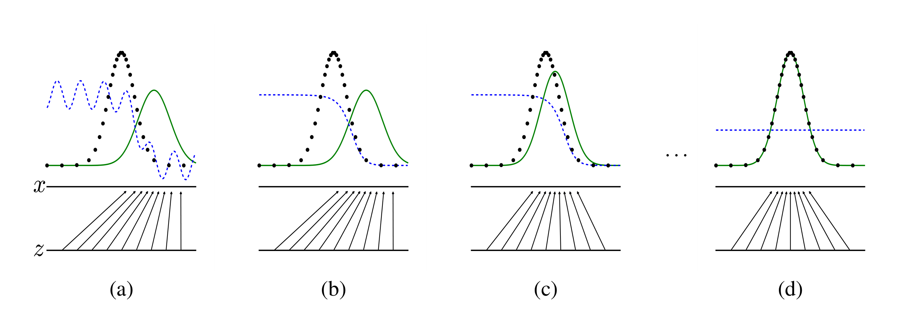

GAN¶
概述¶
[NIPS2014][GAN] Generative Adversarial Nets
Motivation¶
对于深度学习模型的研究主要集中在判别模型领域中，对于生成模型的研究不足。
现有的对于数据分布的估计方法涉及到复杂的统计学手段，应用不便。
模型结构¶
模型描述¶
同时训练一个生成模型 G 和一个判别模型 D，使得生成模型生成的数据分布 p_g 能够真实地估计数据分布。 定义一个先验的输入噪声分布 p_{\boldsymbol{z}}(\boldsymbol{z})，此时生成模型为映射 G(\boldsymbol{z}, \theta_g)。 定义判别模型 D(\boldsymbol{x}, \theta_d) 接受输入 \boldsymbol{x} 并输出一个单个标量代表真实性的置信度。
此时，训练过程等价于一个 minimax 游戏：
工程细节¶
在实践过程中，我们需要采用一个数值计算的方法对目标进行优化。
对于内层的优化目标，直接求出完备的优化结果在计算上是不可行的，因此我们通过交替 k 步优化 D 和 1 步优化 G 来进行求解。超参数 k 需要取适中的值，如果过小则对于 G 的判别不够准确，如果过强容易过拟合。
对于外层的优化目标，里层的函数在实际应用中可能无法提供足够显著的梯度。尤其在早期时当 G 的效果较差时，D 能够以较高的置信度拒绝生成的结果，导致 \log(1 - D(G(\boldsymbol{z}))) 饱和。因此，我们在训练 G 的时候寻求最大化 \log D(G(\boldsymbol{z}))。
训练过程的算法流程如下：

理论说明¶
近似过程¶

全局最优性¶
Prop 1：对于固定的 G，最优的判别模型 D 为：
Proof：
对于给定的生成模型 G，判别模型 D 的训练过程是期望最大化 V(G, D)：
\begin{align} V(G, D) &= \int_{\boldsymbol x} p_{\text{data}}(\boldsymbol{x}) \log(D(\boldsymbol x)) \text dx + \int_{\boldsymbol z} p_{\boldsymbol z}(\boldsymbol z) \log(1 - D(g(\boldsymbol z))) \text dz \\ &= \int_{\boldsymbol x} p_{\text{data}}(\boldsymbol{x}) \log(D(\boldsymbol x)) + p_g(\boldsymbol x) \log(1 - D(\boldsymbol x)) \text dx \end{align}由于对于任意 (a, b) \in \mathbb{R}^2 \backslash \{0, 0\}，函数 y \rightarrow a \log (y) + b \log(1 - y) 在 [0, 1] 见 \frac {a}{a + b} 处取得最大值，因此得证。
将上述结果代入 V(G, D) 中，得到外层生成模型的优化目标 C(G)：
Thm 1：C(G) 取到全局最优解 -\log 4 当且仅当 p_g = p_{\text{data}}。
Proof：
C(G) 的形式与 KL 散度相近，将其变形得到：
\begin{align} C(G) &= \mathbb{E}_{\boldsymbol x \sim p_{\text{data}}}[\log \frac{p_{\text{data}}(\boldsymbol{x})}{\frac 1 2 (p_{\text{data}}(\boldsymbol{x}) + p_g(\boldsymbol{x}))}] + \mathbb{E}_{\boldsymbol{z} \sim p_{g}}[\log \frac{p_g(\boldsymbol{x})}{\frac 1 2(p_{\text{data}}(\boldsymbol{x}) + p_g(\boldsymbol{x}))}] - \log 4\\ &= - \log 4 + \text{KL}(p_{\text{data}} \Vert \frac{p_{\text{data}}(\boldsymbol{x}) + p_g(\boldsymbol{x})}{2}) + \text{KL}(p_g \Vert \frac{p_{\text{data}}(\boldsymbol{x}) + p_g(\boldsymbol{x})}{2}) \end{align}由 KL 散度的性质可知其最小值为 0 当且仅当 p_{\text{data}} = p_g，因此得证。
算法收敛性¶
Prop 2：如果 G 和 D 有足够的容量，并且算法的每一步判别模型 D 都能够优化得到对于给定 G 的最优，则 p_g 收敛到 p_{\text{data}}。
Proof:
转换视角，考虑 V(G, D) = U(p_g, D) 是关于 p_g 的函数，则 U(p_g, D) 是凸函数。
而由于每次 D 都训练到最优，则凸函数的上确界 \text{sup}_D U(p_g, D) 同样是凸函数。
对于凸函数进行优化一定可以找到最优解。